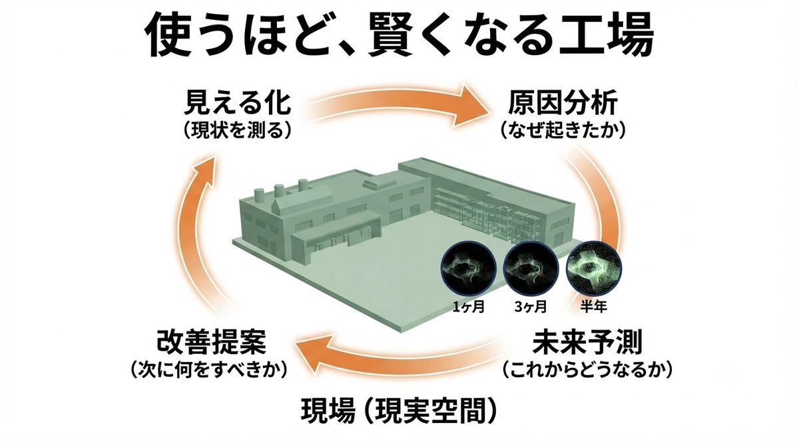
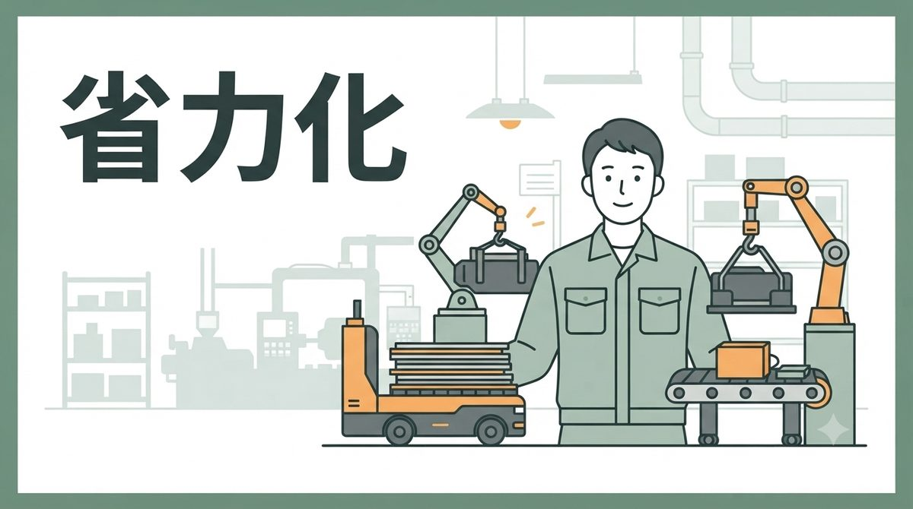
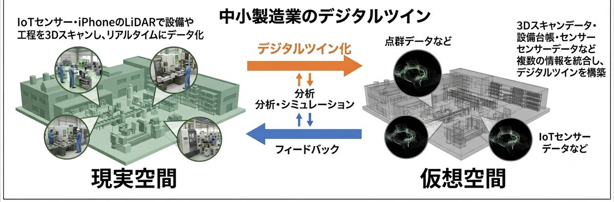

デジタルツイン・自動化・現場改善に関する情報をお届けします。

2026.07.21
デジタルツインの価値は「見える化」だけではありません。データを蓄積し続けることで、工場は異常の原因を突き止め、 未来を予測し、次に何をすべきかまで提案してくれるようになります。その仕組みと考え方を解説します。
続きを読む ›
2026.07.18
ロボットによる自動化には「向いている現場の条件」があり、多くの現場ではその条件を満たせません。 人を減らす省人化ではなく、今いる人の負担を軽くする省力化という考え方と、その第一歩となる「作業の洗い出し」について解説します。
続きを読む ›
2026.07.13
デジタルツインの導入率は中小企業でわずか3%。壁になっているのは技術ではなく「最初の一歩」の分かりにくさです。 iPhoneのLiDARを使った低コスト3Dスキャンから、IoTセンサーによる予知保全まで、現実的な始め方をまとめました。
続きを読む ›